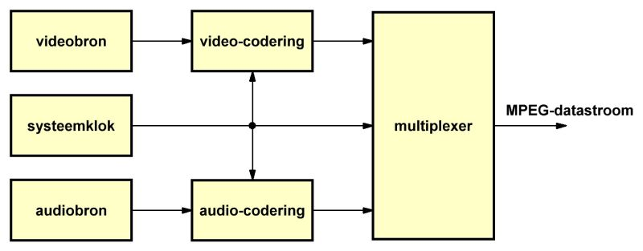
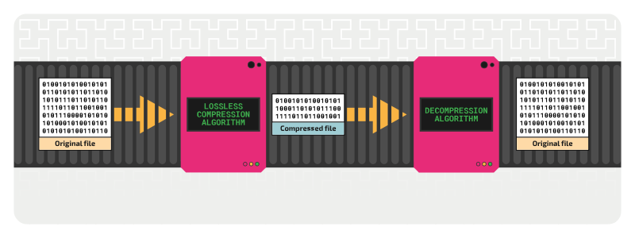

compression is the act condensing data and storing it in a more effecient matter.
Compression is essential in not making your patato pc explode, since without it most apps and browsers won't work.
Compression itself is also split into two respective catogories as shown down here, the two catogories are:
Lossy
Lossless compression reduces file size without deleting any data, which means the original file can be perfectly reconstructed.
It is commonly used for text files, code, and some image formats like PNG.
Lossless
On the other hand, lossy compression deletes some data permanently, typically in a way that is insignificant.
Removing small bites of audio and/or pixels to surpress the file size.
This method is often used for media files such as JPEG images or the classic MP3 audio,
where a slight loss in quality is acceptable for a significant reduction in file size.
So in short, compression is a crucial component of contemporary soft ware systems,
for withit it would be needlessly slow and or impossible in the first place!

